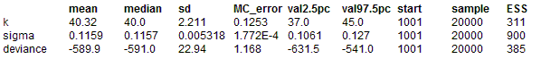
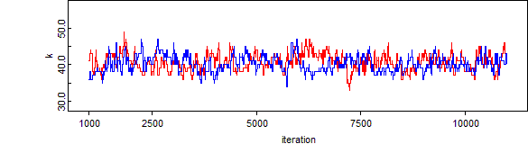
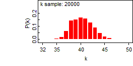
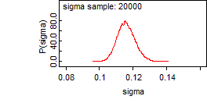
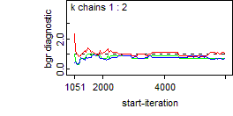
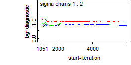
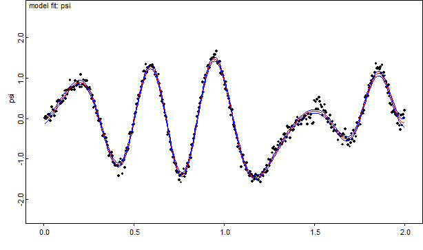

Curves: spline fitting
Splines provide a flexible means of fitting curves through data. One problem is how to choose how many knot points to use in the fit. We can handle this is a Bayesian way by allowing the number of knots to be estimated. This requires the use of the reversible jump sampling algorithm.
model {
for (i in 1:n) {
Z[i] ~ dnorm(psi[i], tau)
}
psi[1:n] <- cubic.spline.d(X[1 : n], k, beta.prec)
#psi[1:n] <- quadratic.spline.d(X[1 : n], k, beta.prec)
#psi[1:n] <- linear.spline.d(X[1 : n], k, beta.prec)
beta.prec <- 0.0001
tau ~ dgamma(a, b)
sigma <- 1 / sqrt(tau)
k ~ dpois(5) T(, 100) # number of knots
}
Data
list(
n = 400,
a = 0.001, b = 0.001,
X = c(0.005, 0.01, 0.015, 0.02, 0.025, 0.03, 0.035, 0.04, 0.045, 0.05, 0.055, 0.06, 0.065, 0.07, 0.075, 0.08, 0.085, 0.09, 0.095, 0.1, 0.105, 0.11, 0.115, 0.12, 0.125, 0.13, 0.135, 0.14, 0.145, 0.15, 0.155, 0.16, 0.165, 0.17, 0.175, 0.18, 0.185, 0.19, 0.195, 0.2, 0.205, 0.21, 0.215, 0.22, 0.225, 0.23, 0.235, 0.24, 0.245, 0.25, 0.255, 0.26, 0.265, 0.27, 0.275, 0.28, 0.285, 0.29, 0.295, 0.3, 0.305, 0.31, 0.315, 0.32, 0.325, 0.33, 0.335, 0.34, 0.345, 0.35, 0.355, 0.36, 0.365, 0.37, 0.375, 0.38, 0.385, 0.39, 0.395, 0.4, 0.405, 0.41, 0.415, 0.42, 0.425, 0.43, 0.435, 0.44, 0.445, 0.45, 0.455, 0.46, 0.465, 0.47, 0.475, 0.48, 0.485, 0.49, 0.495, 0.5, 0.505, 0.51, 0.515, 0.52, 0.525, 0.53, 0.535, 0.54, 0.545, 0.55, 0.555, 0.56, 0.565, 0.57, 0.575, 0.58, 0.585, 0.59, 0.595, 0.6, 0.605, 0.61, 0.615, 0.62, 0.625, 0.63, 0.635, 0.64, 0.645, 0.65, 0.655, 0.66, 0.665, 0.67, 0.675, 0.68, 0.685, 0.69, 0.695, 0.7, 0.705, 0.71, 0.715, 0.72, 0.725, 0.73, 0.735, 0.74, 0.745, 0.75, 0.755, 0.76, 0.765, 0.77, 0.775, 0.78, 0.785, 0.79, 0.795, 0.8, 0.805, 0.81, 0.815, 0.82, 0.825, 0.83, 0.835, 0.84, 0.845, 0.85, 0.855, 0.86, 0.865, 0.87, 0.875, 0.88, 0.885, 0.89, 0.895, 0.9, 0.905, 0.91, 0.915, 0.92, 0.925, 0.93, 0.935, 0.94, 0.945, 0.95, 0.955, 0.96, 0.965, 0.97, 0.975, 0.98, 0.985, 0.99, 0.995, 1, 1.005, 1.01, 1.015, 1.02, 1.025, 1.03, 1.035, 1.04, 1.045, 1.05, 1.055, 1.06, 1.065, 1.07, 1.075, 1.08, 1.085, 1.09, 1.095, 1.1, 1.105, 1.11, 1.115, 1.12, 1.125, 1.13, 1.135, 1.14, 1.145, 1.15, 1.155, 1.16, 1.165, 1.17, 1.175, 1.18, 1.185, 1.19, 1.195, 1.2, 1.205, 1.21, 1.215, 1.22, 1.225, 1.23, 1.235, 1.24, 1.245, 1.25, 1.255, 1.26, 1.265, 1.27, 1.275, 1.28, 1.285, 1.29, 1.295, 1.3, 1.305, 1.31, 1.315, 1.32, 1.325, 1.33, 1.335, 1.34, 1.345, 1.35, 1.355, 1.36, 1.365, 1.37, 1.375, 1.38, 1.385, 1.39, 1.395, 1.4, 1.405, 1.41, 1.415, 1.42, 1.425, 1.43, 1.435, 1.44, 1.445, 1.45, 1.455, 1.46, 1.465, 1.47, 1.475, 1.48, 1.485, 1.49, 1.495, 1.5, 1.505, 1.51, 1.515, 1.52, 1.525, 1.53, 1.535, 1.54, 1.545, 1.55, 1.555, 1.56, 1.565, 1.57, 1.575, 1.58, 1.585, 1.59, 1.595, 1.6, 1.605, 1.61, 1.615, 1.62, 1.625, 1.63, 1.635, 1.64, 1.645, 1.65, 1.655, 1.66, 1.665, 1.67, 1.675, 1.68, 1.685, 1.69, 1.695, 1.7, 1.705, 1.71, 1.715, 1.72, 1.725, 1.73, 1.735, 1.74, 1.745, 1.75, 1.755, 1.76, 1.765, 1.77, 1.775, 1.78, 1.785, 1.79, 1.795, 1.8, 1.805, 1.81, 1.815, 1.82, 1.825, 1.83, 1.835, 1.84, 1.845, 1.85, 1.855, 1.86, 1.865, 1.87, 1.875, 1.88, 1.885, 1.89, 1.895, 1.9, 1.905, 1.91, 1.915, 1.92, 1.925, 1.93, 1.935, 1.94, 1.945, 1.95, 1.955, 1.96, 1.965, 1.97, 1.975, 1.98, 1.985, 1.99, 1.995, 2),
Z = c(0.007838, 0.042489, -0.00515, 0.019582, 0.089111, 0.098774, -0.05338, 0.04599, 0.283564, 0.206667, 0.19886, 0.054474, 0.163908, 0.170097, 0.410482, 0.451966, 0.4243, 0.427519, 0.359907, 0.400534, 0.55966, 0.427103, 0.678167, 0.487724, 0.685672, 0.591028, 0.707134, 0.7211, 0.947091, 0.759739, 0.709634, 0.764868, 0.779683, 0.70707, 0.92797, 0.808449, 0.820089, 0.88585, 0.83841, 0.775767, 1.08113, 0.77932, 0.843757, 0.949845, 0.809155, 0.92755, 0.771005, 0.928895, 0.724913, 0.735251, 0.764993, 0.715748, 0.485144, 0.569103, 0.258197, 0.411085, 0.301985, 0.129598, 0.178189, 0.057973, -0.05625, -0.03816, -0.01685, -0.13386, -0.42668, -0.42958, -0.40309, -0.38893, -0.47908, -0.57738, -0.66504, -0.92156, -0.89781, -0.84773, -0.84436, -0.9286, -1.07295, -1.1071, -1.1629, -1.16259, -1.16065, -1.1633, -1.42265, -1.08188, -0.9989, -1.13456, -1.36647, -1.03821, -1.02831, -1.21937, -0.80679, -0.73684, -0.79744, -0.7591, -0.38609, -0.34804, -0.35182, -0.34316, -0.16592, -0.1484, 0.104962, 0.144112, 0.346341, 0.477048, 0.573176, 0.538109, 0.639423, 0.77889, 0.906308, 1.154787, 1.167716, 0.970771, 1.330657, 1.132206, 1.24626, 1.246457, 1.289202, 1.304804, 1.297737, 1.317129, 1.268276, 1.249832, 1.078234, 1.137803, 1.033951, 1.03681, 1.085815, 0.864455, 0.557312, 0.660073, 0.42106, 0.458195, 0.346632, 0.135907, 0.06477, 0.026362, -0.40804, -0.34188, -0.32359, -0.58389, -0.77101, -0.80574, -0.9607, -0.95752, -1.1, -1.1147, -1.30333, -1.34123, -1.32799, -1.51512, -1.41906, -1.57865, -1.38632, -1.36154, -1.24166, -1.44225, -1.36102, -1.31363, -1.11484, -1.15995, -1.19147, -0.90551, -0.97692, -0.65044, -0.68315, -0.495, -0.39815, -0.2604, -0.19849, 0.049891, 0.157756, 0.257446, 0.365554, 0.499469, 0.534826, 0.886814, 0.647158, 0.998487, 1.056756, 1.051368, 1.274483, 1.308063, 1.288986, 1.245354, 1.452324, 1.458617, 1.490058, 1.502749, 1.565182, 1.570205, 1.656305, 1.393309, 1.348742, 1.387724, 1.397422, 1.116126, 1.076231, 1.154648, 1.051882, 0.822469, 0.720465, 0.901586, 0.684217, 0.547652, 0.478219, 0.269714, 0.082147, 0.211721, 0.207216, -0.15569, -0.21688, -0.27281, -0.38376, -0.48224, -0.70096, -0.62194, -0.74842, -0.82033, -1.19185, -0.94976, -0.91149, -1.07535, -1.16256, -1.25911, -1.09039, -1.27309, -1.35268, -1.41045, -1.31545, -1.38079, -1.55625, -1.42746, -1.50488, -1.44647, -1.38185, -1.50043, -1.4111, -1.52394, -1.44148, -1.57363, -1.39894, -1.32559, -1.42538, -1.3221, -1.26532, -1.32992, -1.16419, -1.30027, -1.00386, -1.17104, -1.02719, -1.05667, -0.84873, -0.74179, -0.7075, -0.77283, -0.75629, -0.77349, -0.66265, -0.57676, -0.6777, -0.61298, -0.52253, -0.63234, -0.58606, -0.40205, -0.3827, -0.56187, -0.47188, -0.19888, -0.23633, -0.21945, -0.47894, -0.27775, -0.189, -0.30171, -0.27843, -0.20282, -0.11154, -0.06173, 0.026606, -0.15777, -0.08103, -0.03541, -0.13998, -0.03946, -0.01798, 0.010817, 0.06232, 0.062207, -0.02333, -0.13922, 0.116499, 0.029354, 0.014339, 0.100847, -0.13332, -0.12835, -0.10024, 0.441761, 0.407415, 0.234132, 0.470783, 0.234263, 0.519726, 0.415126, 0.331149, 0.279144, 0.072558, 0.193287, 0.341419, 0.176203, 0.139315, -0.01109, -0.09043, -0.00622, 0.074894, -0.14629, -0.22819, -0.07267, -0.32013, -0.29445, -0.16607, -0.30879, -0.31142, -0.52822, -0.3958, -0.37217, -0.4402, -0.42801, -0.64595, -0.3798, -0.40522, -0.2658, -0.46025, -0.55419, -0.65541, -0.51662, -0.69441, -0.5998, -0.37372, -0.5175, -0.29461, -0.5646, -0.37347, -0.44818, -0.10365, -0.20454, -0.18576, 0.011221, -0.15049, 0.096368, 0.139458, 0.120882, 0.201226, 0.519836, 0.560505, 0.549754, 0.553573, 0.816704, 0.753907, 0.862449, 0.927553, 1.04982, 0.977742, 1.021029, 1.129378, 1.34871, 1.233009, 1.244647, 1.235298, 1.215189, 1.260516, 1.116014, 1.320952, 1.048812, 1.130793, 1.054947, 0.913297, 0.77856, 0.624134, 0.818523, 0.545193, 0.361782, 0.324909, 0.142608, 0.157748, 0.203817, 0.138681, 0.097639, 0.066883, -0.13177, 0.116262, -0.17135, -0.28034, 0.071406, -0.16961, 0.099633, 0.012687, 0.201479))
( click to open )
Inits for chain 1
list(tau = 100, k = 20)
Inits for chain 2
list(tau = 100, k = 50)
ResultsOne update took 118ms
Choice of updaters
Updater type Size Depth
k reversible jump descrete updater 801 1
[0273DAC0H]
...
[02749020H]
tau conjugate gamma updater 1 1

DIC direct parents




Check of externalization first process
mean median sd MC_error val2.5pc val97.5pc start sample ESS
deviance -591.3 -592.6 25.51 1.697 -635.5 -536.2 1001 10000 225
k 40.42 40.0 2.291 0.1622 36.0 45.0 1001 10000 199
sigma 0.1157 0.1155 0.005583 2.568E-4 0.1057 0.1275 1001 10000 472
second process
mean median sd MC_error val2.5pc val97.5pc start sample ESS
deviance -591.3 -592.6 25.51 1.697 -635.5 -536.2 1001 10000 225
k 40.42 40.0 2.291 0.1622 36.0 45.0 1001 10000 199
sigma 0.1157 0.1155 0.005583 2.568E-4 0.1057 0.1275 1001 10000 472
mean median sd MC_error val2.5pc val97.5pc start sample ESS
deviance -589.9 -591.0 22.94 1.168 -631.5 -541.0 1001 20000 385
k 40.32 40.0 2.211 0.1253 37.0 45.0 1001 20000 311
sigma 0.1159 0.1157 0.005318 1.772E-4 0.1061 0.127 1001 20000 900